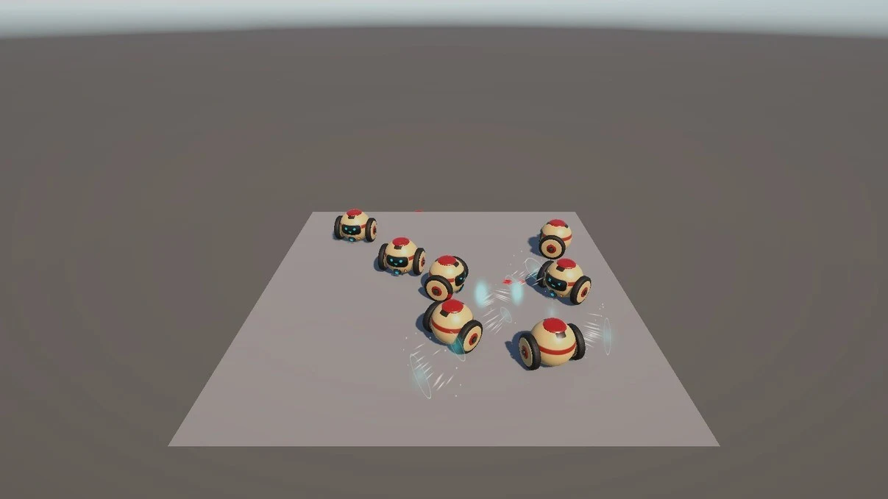

PLAY CAPTUREGAME AI INTEGRATION 2인 개발
Lunch Royale
학습된 행동이 게임의 규칙 안에서
움직이도록, AI와 플레이를 연결하다.
클라이언트 전체 담당 / 모델 학습은 동료 담당
관찰·행동 계약과 라운드 판정UNITY / GAME & VR / CLIENT ENGINEERING
안녕하세요, 게임 클라이언트 개발자 박우영입니다.
게임의 규칙과 데이터, 제작 도구와 화면 표현을
하나의 플레이 경험으로 연결합니다.
기능 구현에서 멈추지 않고,
플레이가 전달되는 순간까지.
01 / SELECTED WORK
무엇을 만들었는지,
어떤 판단을 했는지 함께 보여드립니다.

PLAY CAPTUREGAME AI INTEGRATION 2인 개발
학습된 행동이 게임의 규칙 안에서
움직이도록, AI와 플레이를 연결하다.
클라이언트 전체 담당 / 모델 학습은 동료 담당
관찰·행동 계약과 라운드 판정CONTENT & AUTHORING 3인 개발
퍼즐 하나를 넘어,
콘텐츠를 계속 만드는 기반을 설계하다.
JellyMelt / 저장 / 스토리 편집기 / 사운드·광고
공용 시스템과 제작 도구END-TO-END DEVELOPMENT 1인 개발
게임의 규칙부터 손맛까지,
하나의 플레이 루프로 완성하다.
기획 / 클라이언트 / LAN PvP / 아트·연출 통합
성장·저장·물리·표현의 연결세 프로젝트 모두 개발 중입니다. 아래 구현·검증 범위는 제공된 2026년 10월 포트폴리오 기준입니다.
AI 개발자와 클라이언트 개발자가 함께 만드는 물리 기반 배틀 시뮬레이션입니다. 저는 관찰과 행동의 연결, 이동·밀치기·생존, 라운드 판정과 시각 피드백을 담당했습니다.
자기 상태 6개, 최근접 적 정보 5개, 밀치기 쿨다운 1개로 관찰값을 구성했습니다. 적이 없거나 사망한 분기에도 0을 채워 입력 길이를 유지합니다. BattleAgentHub가 프레임워크 콜백을 받아 기능별 Ability로 전달합니다.
같은 프레임의 탈락을 모으고 다음 Update에서 승패 조건을 함께 평가합니다. 재시도와 최종 결과 이벤트를 분리하고, 중단·재시작 시 취소 토큰으로 이전 판정 대기를 정리합니다.
밀치기·피격·처치·승리 사건에 따라 MaterialPropertyBlock으로 얼굴 텍스처를 갱신합니다. 표정 복귀 대기의 취소와 에피소드 초기화도 함께 처리합니다.
담당 범위: 게임 클라이언트 전체. ONNX 모델 학습은 동료 AI 개발자 담당이며, 학습 성능·승률을 개인 성과로 제시하지 않습니다. 시작 월은 최초 커밋 기준입니다.
클라이언트 2명과 기획자 1명이 함께 개발하는 미니게임 프로젝트입니다. JellyMelt의 맵·풀링과 공용 저장·스토리·오디오·광고 기능을 맡고, 콘텐츠를 편집하는 도구부터 플레이 UI까지 연결했습니다.
MapData에서 맵을 생성하고 프리팹별 풀과 활성 인스턴스를 관리합니다. 스테이지 초기화 중 풀링 오브젝트가 중복 반환되는 문제와 드래그·모서리 충돌을 수정했습니다.
Domain / DTO / Repository로 게임 규칙과 저장 형식을 분리했습니다. StoryGraphWindow와 GraphView로 챕터·에피소드·메시지를 편집하고, 에셋 생성·Undo·노드 위치 저장과 채팅 미리보기를 연결했습니다.
버튼·패널·아이콘을 투명 PNG로 나누고 숫자·한글은 TMP가 표시하도록 했습니다. 원근·직교 카메라, 화면 비율 3종, 맵 4종의 24개 조합에서 프레이밍을 확인했습니다.
담당 범위: JellyMelt, 공용 저장·스토리 도구·사운드·광고와 시각 개선. PotionSort 핵심 규칙은 동료 담당입니다. 저장은 현재 로컬 JSON이며, 모바일 실기 성능과 전체 입력 흐름은 추가 검증 대상입니다. 시작 월은 최초 커밋 기준입니다.
훈련과 스탯 투자, NPC 도전과 LAN 대전을 연결하는 1인 개발 게임입니다. 기획·클라이언트부터 AI 아트의 에셋화, 3D 환경·물리 반응·연출 통합을 담당했습니다.
FishNet 서버가 탭 간격·성장 수치·피해·라운드를 검증하고 SyncVar·ObserversRpc로 전달합니다. 첫 승리 보상의 중복 지급을 막고 패배 후 기존 성장을 보존하도록 규칙을 분리했습니다.
임시 파일 작성 후 교체하고 백업을 남깁니다. 손상 원본을 보관하고 유효한 백업을 복원하며, 미래 버전 데이터는 덮어쓰지 않도록 처리했습니다.
AI 레퍼런스, UModeler X, Blender를 거쳐 샌드백을 62,800삼각형에서 3,208개로 줄였습니다. 5본 리그에 Rigidbody·ConfigurableJoint를 연결하고 타격 위치의 임펄스로 반응시킵니다.
게임 이벤트로 VFX·피해 숫자·카메라 반응을 연결하고 unscaled time을 사용합니다. VFX 8개 슬롯을 재사용하며 중단 시 잔상·오디오·카메라 화각을 정리합니다.
렌더러·삼각형은 에셋 구성 수치이며 FPS 향상 측정값이 아닙니다. 물리는 격리된 Editor PhysX 검사 기준이고, LAN 2기기 종합 검증과 모바일 실기 성능 측정은 남아 있습니다. 시작 월은 최초 커밋 기준입니다.
코드의 구조부터 작업 전후 화면까지.세 프로젝트의 상세 구현은 Game Client & AI 포트폴리오에서 확인할 수 있습니다.
상세 포트폴리오 PDF02 / PROFESSIONAL EXPERIENCE
Meta Quest의 상호작용과 멀티플레이 동기화
Project T 클라이언트 시스템과 초기 개발 환경 구축
기획 1명 · 아트 1명 · 클라이언트 3명의 팀 프로젝트. 회사 프로젝트는 공개 가능한 담당 시스템 중심으로 기술했습니다.
MORE PROJECTS / 기초에서 협업으로
Ability 기반 플레이어 구조, 키보드·게임패드 리바인딩, Mirror 생성·회수 및 Queue 기반 네트워크 풀링을 구현했습니다.
2025.07 — 08 · 클라이언트 5명낙하 전투 환경과 보스 패턴, Shader Graph·VFX를 담당했습니다. 곡사 탄환의 경유 위치 문제를 Hermite 보간으로 다뤘습니다.
2025.05 — 06 · 4인 팀건물 설치·업그레이드·UI를 구현했습니다. 거리 기반 활성화를 위해 int로 고정된 우선순위 큐를 제네릭 구조로 수정했습니다.
2025.04 · 4인 팀Python·Pygame·NumPy로 이동·충돌·마찰·회전·스핀을 구현한 캡스톤 프로젝트입니다. PM과 주요 프로그래밍을 맡았습니다.
대학교 캡스톤 · 3인 팀C++·Win32 API·GDI+로 타일 맵 편집·저장 도구와 더블 버퍼링, FSM 기반 화면 전환·전투 UI를 구현했습니다.
기획 1명 · 클라이언트 1명03 / HOW I BUILD
물리학에서 배운 모델링과 논리적 사고를 게임 개발에 적용합니다. 아이스하키 선수 활동에서 익힌 책임감과 팀 적응력으로, 기획·아트·개발의 요구를 나누고 맡은 작업을 끝까지 이어갑니다.
2017.03 — 2024.02 · 이학사
SKKU Com2uS SAY2025.02 — 2025.08
생성형 AI 기반 게임콘텐츠 개발 실무 과정
2024.07 — 2024.12 · Udemy
Ability, 상태와 조건 평가, Domain/Repository 구조로 책임을 구분합니다. 입력 주체와 네트워크 권한, 비동기 작업의 수명까지 함께 살핍니다.
스토리 그래프, Behavior Tree 에디터, 데이터 연동과 자동 빌드까지. 게임 기능과 함께 반복 작업을 줄이고 변경 내용을 확인할 수 있는 도구를 만듭니다.
콘셉트를 만드는 데서 끝내지 않고 UI 자산 분리, 메시·재질 정리, 플랫폼별 표현 비용과 검증으로 이어갑니다. 직접 맡은 범위와 도구의 도움을 구분해 설명합니다.
Profiler의 병목, 에셋 구성 수치, 같은 조건의 전후 비교를 근거로 판단합니다. Editor 검증과 실기 성능, 구현과 아직 남은 검증을 구분합니다.
04 / TAKE A CLOSER LOOK
이력서부터 기술적 판단의 과정까지.
필요한 자료를 PDF로 받아보세요.
경력·기술 스택·프로젝트 경험을
한 문서로 정리했습니다.
Lunch Royale · Puzzle Zip · Fighter Tap
담당 범위, 구조, 제작과 검증 과정.
Project T와 팀 프로젝트의
시스템·네트워크·그래픽 구현.
LET'S BUILD THE NEXT PLAY.